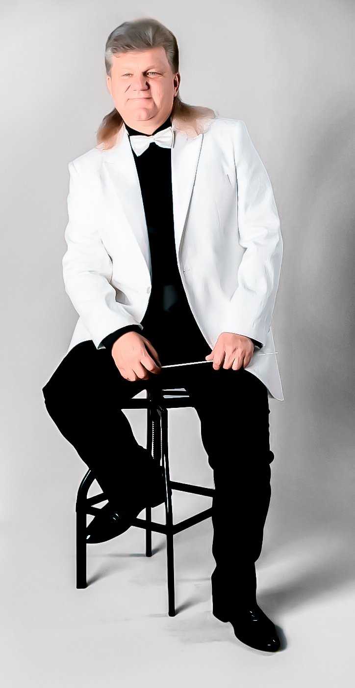
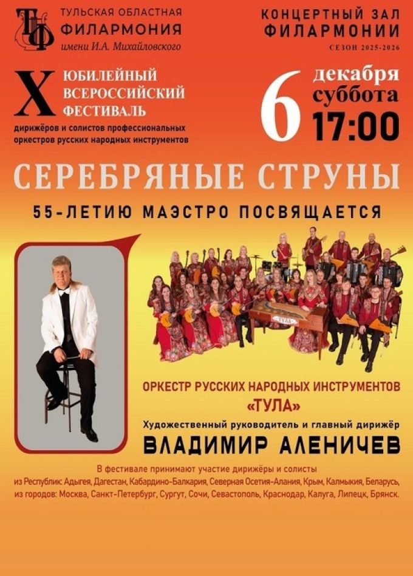
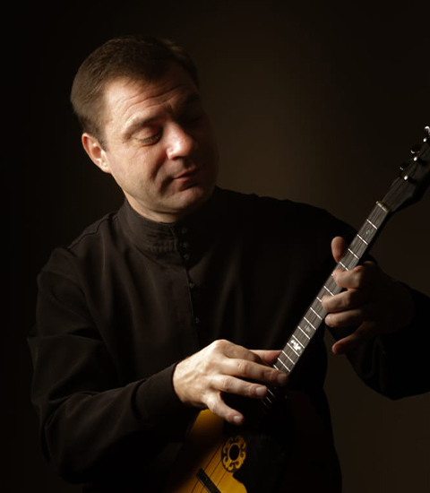

Владимир Аленичев
основатель проекта · дирижёр
частный проект

Частный проект, выросший из встреч с людьми Северной Осетии и любви к музыке гор. Мы соединяем оркестры, ансамбли, педагогов и слушателей, чтобы сохранить и показать миру культуру наших народов.

«В содружестве культур-единство нации» — так называлась одна из моих программ. И это действительно так. Несколько лет назад я был в Северной Осетии и был потрясён культурой и удивительными людьми. Эта поездка и встреча с Осетией сподвигла меня на создание этого Общества, цель которого — сохранение традиций наших великих народов. И не только сохранение, но и популяризация удивительной культуры Северной Осетии и налаживание кругов творческих связей, а также продвижение совместных проектов.
Владимир Аленичев основатель Российско-Осетинского Музыкального Общества

6 декабря в концертном зале Тульской областной филармонии пройдёт фестиваль солистов и дирижёров профессиональных оркестров народных инструментов «Серебряные струны». Организатор и основатель фестиваля — Владимир Аленичев.
Олег Бексултанович Ходов примет участие в фестивале по личному приглашению Владимира Аленичева. Для Российско-Осетинского Музыкального Общества это первый совместный проект, соединяющий традиции осетинской и российской оркестровой школы на большой филармонической сцене.

Российско-Осетинское Музыкальное Общество
Частный проект, который развивается шаг за шагом. Здесь появятся официальные контакты и реквизиты,
когда структура будет полностью оформлена.
Для партнёров, музыкантов и организаторов фестивалей — этот раздел станет точкой входа: заявка на участие, предложения о совместных проектах, идеи по развитию музыкальной жизни Осетии и России.